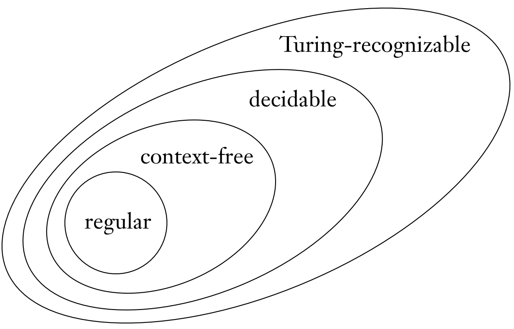

Homework 10
Last updated: Fri, 20 Nov 2026 11:21:16 -0500
Out: Sat Nov 21 Due: Tue Dec 01, 12:30pm EST
Note: Assignments are not officially "released" until—
and are subject to change without notice up to— the indicated "Out" date and time. If an assignment is posted early, students may look ahead but are responsible for ensuring that they are always working with the most recent version of the homework.
This assignment continues to explore Turing machines, specifically deciders.
Homework Problems
Another Closed Operation (Extra Credit 2) (up to 20 extra points, or -5 points)
A Language of DFAs (21 points)
Regular vs Decidable Languages? (21 points)
Chomsky Normal Form for CFGs (21 points)
README (2 point2)
Total: 85 (out of 65) points
Submitting
Submit your solution to this assignment in Gradescope hw10. Please assign each page to the correct problem and make sure your solutions are legible.
A submission must also include a README containing the required information.
1 Another Closed Operation (Extra Credit 2)
NOTE 2026-11-21: This problem is extra credit and is optional. This means that it will also be optional for the graders. By submitting an answer you accept that graders can refuse to grade this problem for any reason related to the content of the submission. There will be no discussion of this matter and no regrade requests will be accepted. Further, if there is any foreign notation or terminology not from this course or extraneous words or hint of AI use in any submitted answer, then the submission will receive negative points. This will be determined solely by the graders and no regrade requests or discussion will be accepted about this issue. If you are unsure about anything in this note, then do not submit an answer for this problem. By submitting an answer to this problem, you accept these terms.
Prove that the regular languages are closed under the following function on languages:
\mathrm{INV}(L) = \left\{\textrm{strings }s\mid s \textrm{ isn{}’t in the input}\right\}
An explicitly stated IF-THEN Statement to Prove (please ask if there is any confusion here, if this part is not correct, then the rest of the problem will also not be correct)
A proof of the exact statement above in using the correct proof syntax, constructors from this semester. Any solutions that prove a different theorem or answer a different question will not receive credit.
If necessary, any machine or other transformation functions should be separate from, but referenced from, the main proof. In particular, this proof must define and use an NFA-transformation function called \mathrm{INV}_\textsf{NFA} such that \mathrm{LangOf}(\mathrm{INV}_\textsf{NFA}(N))=\mathrm{INV}(\mathrm{LangOf}(N)).
But as usual, the proof should not explicitly prove the correctness statement above. Instead, it should use an Examples Table to justify a statement of the form "SOME-MACHINE recognizes SOME-LANGUAGE". The table should include both examples in the language and not in the language, should cover all paths through the machine, and should think about corner cases. Also, if the proof does not involve one specific machine or language (which it should not) then the Examples Table needs Justifications.
2 A Language of DFAs
Prove that the following language is a decidable language:
\textrm{UGRAD}_{\textsf{DFA}} = \left\{\left\langle D\right\rangle\mid \textrm{DFA } D\textrm{ accepts all nums except UMB cs grad course nums}\right\}
You may assume that the alphabet of the DFAs is \{\texttt{0},\texttt{2},\texttt{4},\texttt{6}\}, and that valid UMB CS grad courses are any three digit number starting with \texttt{6} made from alphabet characters.
If your answer involves a decider, its definition must include a termination argument.
Also, for this problem, the decider must use at least two machine we have previously defined in lecture or homework. (Remember that when creating new Turing machines, all other machines or algorithms previously constructed in class or in previous homeworks are available as a "library"!)
Finally, make sure your proof includes the necessary Examples Table with the appropriate columns (e.g., whether strings are in the language, whether strings are accepted by the decider, existing machines used, etc.).
3 Regular vs Decidable Languages?

The "decidable" oval is bigger than the "regular" one.
The "regular" oval is completely inside the "decidable" one.
NOT IF L IS-A Turing-decidable Language THEN L IS-A Regular Language
The proof must use proof by contradiction and the required proof constructors and formatting.
IF L IS-A Regular-Language THEN L IS-A Turing-decidable Language
4 Chomsky Normal Form for CFGs
Recall that a CFG is in Chomsky Normal Form (CNF) if all rules have the form:
A \rightarrow BC |
A \rightarrow \texttt{a} |
where \texttt{a} must be a terminal, A, B, C are variables, and B and C are not the start variable.
In addition, a grammar in CNF may include a rule A\rightarrow \varepsilon if A is the start variable.
Convert the following context-free grammar to Chomsky Normal Form using the algorithm described in class.
S\rightarrow XW
X\rightarrow \texttt{x}X\mid\varepsilon
W\rightarrow \texttt{y}W\texttt{z}\mid \varepsilon